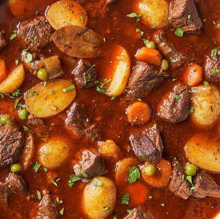
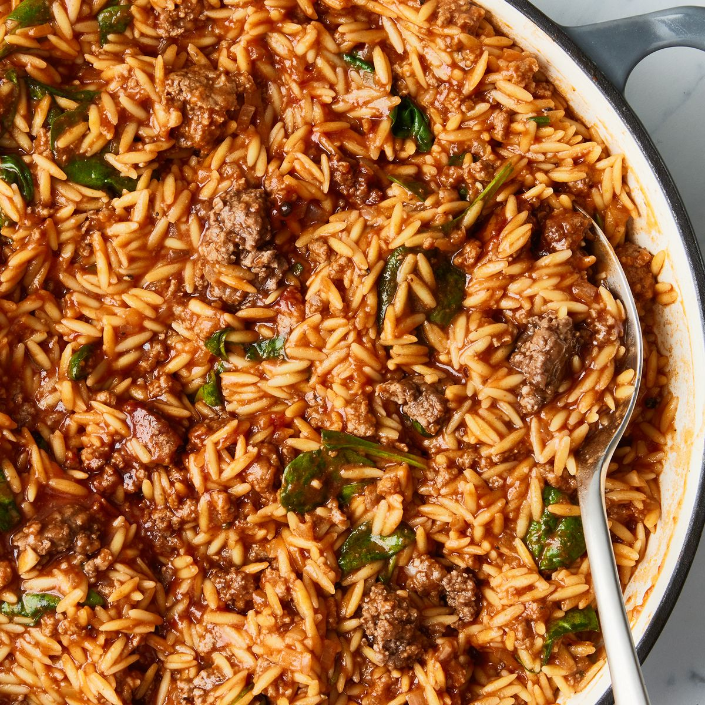
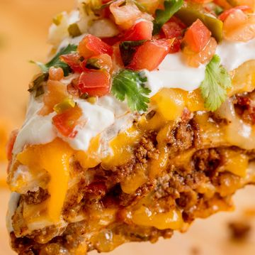

RECIPES
1. Chicken Stir Fry:
Ingredients
1/2 c. reduced-sodium soy sauce
2 tbsp. honey
2 tsp. toasted sesame oil
1 tbsp. canola oil
1 head broccoli, cut into small florets
1 bell pepper, seeds and ribs removed, chopped
2 cloves garlic, finely chopped
1 lb. boneless, skinless chicken breast, cut into 1" pieces
1/3 c. cashews
Freshly ground black pepper
Instructions;
Step 1
In a small bowl, whisk soy sauce, honey, and sesame oil.
Step 2
In a large skillet over high heat, heat oil. Cook broccoli, bell pepper, and garlic, stirring frequently,
until softened, about 5 minutes. Add chicken and cook, tossing occasionally,
until golden brown and cooked through, about 8 minutes. Stir in cashews; season with pepper.
Step 3
Pour sauce into skillet and bring to a simmer. Cook, stirring occasionally, until thickened, about 5 minutes.
2. Beef Stew:

Ingredients
1 tbsp. (or more) vegetable oil
2 lb. beef chuck stew meat, cut into 1" cubes
1 medium yellow onion, chopped
2 carrots, peeled, cut into rounds
Kosher salt
Freshly ground black pepper
3 cloves garlic, finely chopped
1/4 c. tomato paste
6 c. low-sodium beef broth
1 c. red wine
1 tbsp. Worcestershire sauce
2 fresh thyme sprigs
2 bay leaves
1 lb. baby potatoes, halved
1 c. frozen peas
1/4 c. chopped fresh parsley
Instructions;
Step 1
In a large Dutch oven or heavy pot over medium heat, heat oil. Add beef and cook, turning occasionally, until seared on all sides, about 10 minutes. Transfer beef to a plate.
Step 2
Coat bottom of pot with oil, if needed, and heat over medium-high heat. Cook onion, carrots, and celery, stirring, until softened, about 7 minutes; season with salt and pepper. Add garlic and tomato paste and cook, stirring, until garlic is fragrant and tomato paste has darkened, about 2 minutes. Return beef to pot. Add broth, wine, Worcestershire, thyme, and bay leaves. Bring to a boil, then reduce heat to medium-low and bring to a simmer; season with salt and pepper. Cover and simmer, stirring occasionally, until beef is tender, 30 to 45 minutes.
Step 3
Add potatoes and simmer, covered, until potatoes are tender, about 15 minutes.
Step 4
Remove bay leaves and thyme. Stir in peas and cook, stirring, until warmed through, about 2 minutes; season with salt and pepper.
Step 5
Divide stew among bowls. Top with parsley.
3. Sloppy Joe Orzo:

Ingredients
4 tbsp. extra-virgin olive oil, divided
1 1/2 lb. lean ground beef
Kosher salt
Freshly ground black pepper
1 medium yellow onion, finely chopped
12 oz. orzo (about 2 c.)
3 cloves garlic, finely chopped
2 c. low-sodium beef broth
1 (15-oz.) can tomato sauce
3 tbsp. tomato paste
2 tbsp. packed light brown sugar
1 tbsp. apple cider vinegar
1 tbsp. Worcestershire sauce
3 c. packed baby spinach (about 3 oz.)
Instructions;
Step 1
In a large Dutch oven or heavy pot over medium-high heat, heat 2 tablespoons oil.
Add beef; season with salt and pepper. Cook, stirring occasionally,
until beef is cooked through and browned, about 10 minutes.
Scrape beef into a colander set over a bowl and let excess fat drain.
Step 2
In same pot over medium-high heat, heat remaining 2 tablespoons oil.
Cook onion, stirring occasionally, until starting to soften, about 5 minutes.
Add orzo and garlic and cook, stirring frequently,
until orzo is lightly toasted and garlic is fragrant, about 2 minutes.
Step 3
Add broth, tomato sauce, tomato paste, brown sugar, vinegar,
Worcestershire, and 2 1/2 cups water; season with salt and pepper and stir to combine.
Bring to a boil, then reduce heat to medium-low and bring to a simmer. Cook, stirring frequently,
until liquid is mostly absorbed and orzo is tender, 12 to 14 minutes.
Step 4
Return beef to pot and add spinach. Cook, stirring frequently,
until spinach is wilted and beef is warmed through, about 2 minutes more;
season with salt and pepper, if needed.
4. Taco Pie:

Ingredients
Cooking spray
1 tbsp. extra-virgin olive oil
1 large yellow onion, chopped
2 cloves garlic, finely chopped
1 tsp. chili powder
1 tsp. ground cumin
1 lb. ground beef
2 tomatoes, chopped
2 tbsp. tomato paste
Kosher salt
Freshly ground black pepper
6 medium flour tortillas
1 c. shredded cheddar
1 c. shredded Monterey Jack
Pico de gallo, sour cream, and fresh cilantro, for serving
Instructions;
Step 1
Preheat oven to 400° and grease an 8" or 9" springform pan with cooking spray.
In a large skillet over medium heat, heat oil. Add onion and cook, stirring,
until softened, about 7 minutes. Add garlic, chili powder, and cumin and cook, stirring, until fragrant,
about 1 minute. Add ground beef and cook, breaking up meat with a wooden spoon,
until no longer pink, about 6 minutes. Drain fat.
Step 2
Add tomatoes and tomato paste and cook over medium heat, stirring occasionally,
until warmed through, about 2 minutes; season with salt and pepper.
Step 3
Place a tortilla on bottom of prepared pan. Top with a layer of beef mixture and a
handful of cheddar and Monterey Jack. Repeat for 5 layers total, ending with cheese.
Step 4
Bake taco pie until cheese is melty and tortillas are warmed through, about 20 minutes.
Let cool in pan 5 minutes.
Step 5
Garnish with desired toppings before slicing.